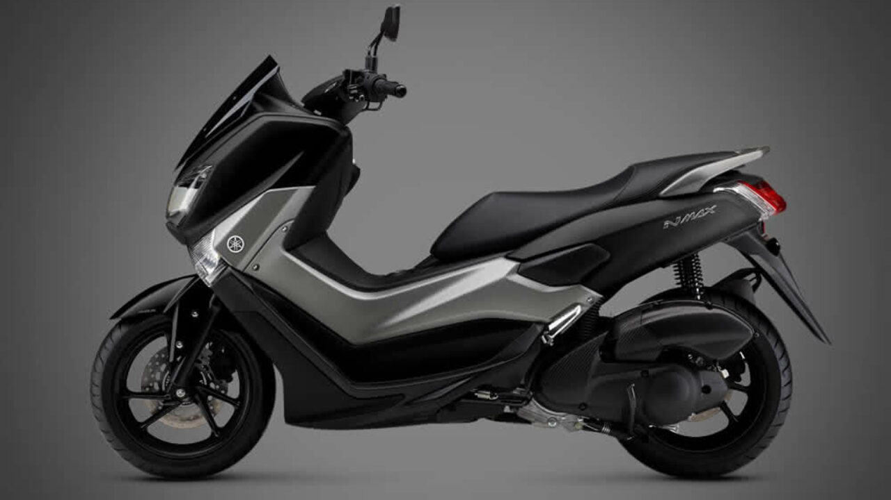

A simple vista ya podemos notar que son las motos más rápidas. Por su carenado aerodinámico y características en el motor que las hacen especiales para la velocidad. Requieren de un piloto experimentado, sobre todo al momento de aplicar los frenos.
Un estilo particular y extraño, mezcla entre moto antigua y chopera. Es especial para lucirla por las calles y rutas. Muy cómoda en su andar.

Por lejos la moto más cómoda para filtrarse en las combulsionadas calles de las grandes ciudaddes. Tienen una caja de velocidades CVT (no poseen palanca de cambio), lo que las hacen súper fáciles de conducir.
Casi tan rapidas como las deportivas pero mas comodas y divertidas. Son especiales para hacer willy con relativo poco esfuerzo.
El nombre lo dice todo, parecen motos de epocas anteriores pero combinadas con tecnologia actual, tambien llamadas Caffe Racer.
La clasica moto americana, simpre relacionada con la marca Harley Davison. Cuentan con motores muy grandes que las hacen perfectas para viajes largos.